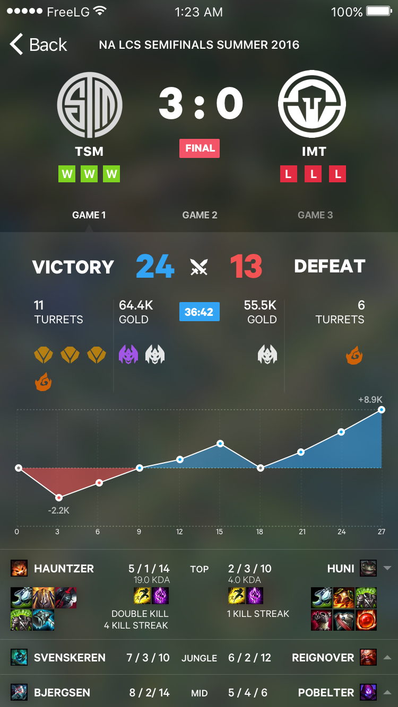

Screens
Here is the main screen of the application. I started off sketching the app in my grid book, figuring out the information hierarchy.
When I watch a match and look at a recap, the most important pieces of information are in order: victory/defeat, kills, gold, game objectives, and then player-by-player contribution.
No app had a visual representation of gold over time - the difference in gold is the most accurate representation of a game is going - difference in gold contributes to item differences and hence overall team power. I decided to incorporate an Apple Health-like interface, like steps/day tracking to make tracking how a game was going easy on the eye. The areas under the line make it very easy to see at a glance how a game is going at any point in time.

The graphic in the back is the map of Summoner's Rift.
I'll add more screens as I get to them!